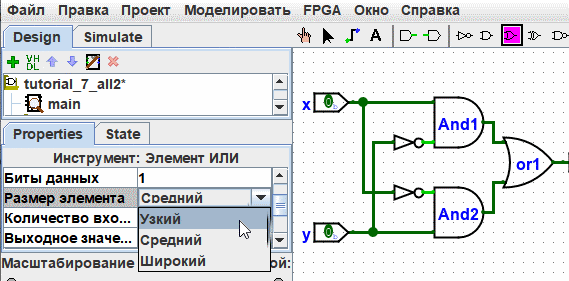
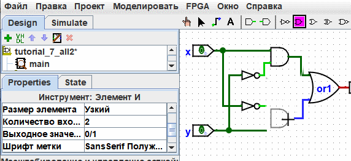

Атрибуты инструментов и компонентов
Каждый инструмент, предназначенный для размещения компонентов на схеме, обладает собственным набором атрибутов. Эти свойства автоматически передаются создаваемым с его помощью компонентам. В дальнейшем свойства конкретного компонента на схеме можно изменить независимо, при этом атрибуты самого инструмента останутся прежними. При выборе любого инструмента таблица атрибутов переключается на отображение свойств этого инструмента.
Рассмотрим пример. Предположим, мы хотим создавать узкие логические элементы «И». По умолчанию при выборе инструмента «И» программа создаёт широкий (стандартный) элемент. Если мы измененим значение атрибута Размер элемента сразу после выбора инструмента (но до того, как установим элемент «И» на схему), мы изменим свойства самого инструмента. В результате все последующие элементы «И», размещённые этим инструментом, будут создаваться узкими.

Теперь мы можем удалить старые элементы «И» и поставить на их место новые. Они будут созданы узкими. (Если уменьшить количество входов до 3, то корпус элемента «И» не будет иметь дополнительного вертикального расширения с левой стороны, однако вам придётся переподключить проводники так, чтобы они подходили точно к его левым контактам.)

Для некоторых инструментов их значок на панели динамически отображает текущие свойства. Ярким примером является инструмент «Контакт», значок которого ориентирован в соответствии со значением его свойства Направление.
Инструменты на панели быстрого доступа имеют независимые наборы свойств от аналогичных инструментов в навигаторе. Таким образом, даже если вы изменили инструмент «И» на панели быстрого доступа для рисования узких корпусов, инструмент «И» в папке библиотеки Элементы по-прежнему будет создавать широкие корпуса, пока вы не перенастроите его свойства отдельно.
Инструменты «Входной контакт» и «Выходной контакт» на панели быстрого доступа по умолчанию являются экземплярами одного и того же инструмента «Контакт» из библиотеки Монтаж, но имеют разные предустановленные свойства. Значок инструмента «Контакт» отрисовывается в виде круга или квадрата в зависимости от логического значения атрибута «Выход?».

Logisim-evolution предоставляет удобное сочетание клавиш для быстрого изменения свойства Направление, которое определяет ориентацию большинства компонентов на холсте: нажатие клавиш со стрелками (влево, вправо, вверх, вниз) при выбранном инструменте автоматически меняет направление будущего компонента.
Далее: Назад к руководству пользователя.